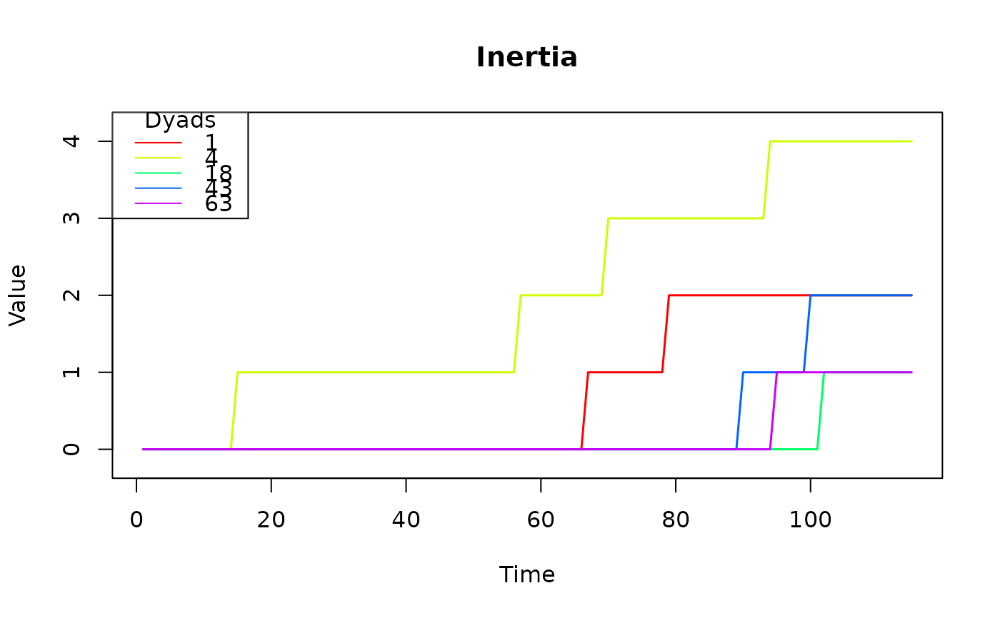
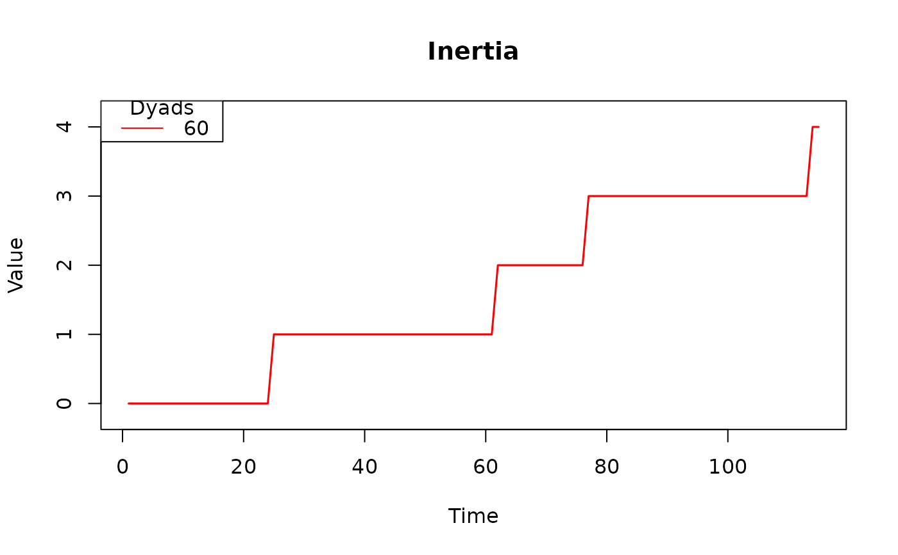

Generate line plots to visualize the trajectories of a specified effect in a
tomstats object.
Usage
# S3 method for class 'tomstats'
plot(x, effect, subset = NULL, ...)Arguments
- x
An object of class
tomstatscontaining relational event network statistics.- effect
A character string specifying the name of the effect in 'x' or an integer indicating the index of the effect to be plotted.
- subset
An optional vector specifying a subset of dyads to be used for plotting. By default, a maximum of 5 unique dyads are used for plotting.
- ...
Additional arguments passed to plot().
Details
This function creates line plots to illustrate the temporal trajectories of a
specified effect in a relational event network, as captured by a
tomstats object. The 'effect' parameter allows users to choose a
specific effect for visualization, either by providing the effect's name or
its index within the 'tomstats' object. An optional 'subset' parameter enables
users to focus on specific dyads. If 'subset' is not specified, a default
maximum of 5 unique dyads is plotted. These dyads are randomly selected to
represent trajectories across the range of different endpoints for the effect
(excluding zero).
Examples
library(remstats)
# Load data
data(history)
# Prepare data
reh <- remify::remify(edgelist = history[,1:3], model = "tie")
# Compute effects
stats <- remstats(reh, tie_effects = ~ inertia())
# Plot the 'inertia' trajectories for 5 dyads
plot(stats, effect = "inertia")

# Plot the 'inertia' trajectory for a specific dyad
plot(stats, effect = "inertia", subset = 60)
